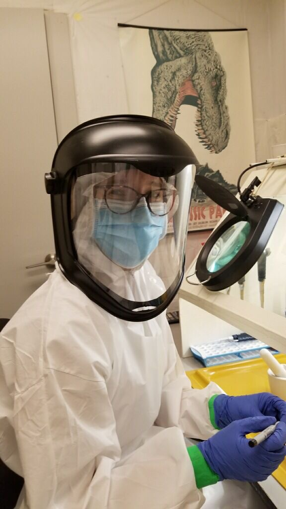

Between January 2021 and December 2024, I worked on my PhD thesis in Aaron Shafer's' lab, close to Toronto, Canada. There, I tried to understand how North America’s dynamic history shaped the evolutionary trajectory of the region’s Cervidae species. Indeed, between the climatic oscillations of the Quaternary, the peopling of the continent and the subsequent human colonisation, North American faunal and plant populations faced many pressures. Specifically, I looked at the speciation, hybridisation and demographic history of the sister species white-tailed and mule deer, at the phylogenetic relationship of a contentious taxon, and at genetic diversity over time in five extant deer species.
Speciation without gene-flow in hybridising deer

The first chapter of my PhD focussed on white-tailed (WTD, Odocoileus virginianus) and mule deer (MD, O. hemionus) hybridisation and speciation process. There is ample modern evidence that both species hybridise in areas of sympatry but the lack of range-scale and genome-wide analysis has made it difficult to date the onset of the hybridisation. Gene-flow was thought to be as old as speciation and we therefore wanted to see if ecological speciation was at work in this system. Surprisingly, we found that gene-flow between WTD & MD was the result of recent secondary contact, as such, it did not impact the speciation process.
Abstract: Under the ecological speciation model, divergent selection acts on ecological differences between populations, gradually creating barriers to gene flow and ultimately leading to reproductive isolation. Hybridisation is part of this continuum and can both promote and inhibit the speciation process. Here, we used white‐tailed (Odocoileus virginianus) and mule deer (O. hemionus) to investigate patterns of speciation in hybridizing sister species. We quantified genome‐wide historical introgression and performed genome scans to look for signatures of four different selection scenarios. Despite ample modern evidence of hybridisation, we found negligible patterns of ancestral introgression and no signatures of divergence with gene flow, rather localized patterns of allopatric and balancing selection were detected across the genome. Genes under balancing selection were related to immunity, MHC and sensory perception of smell, the latter of which is consistent with deer biology. The deficiency of historical gene‐flow suggests that white‐tailed and mule deer were spatially separated during the glaciation cycles of the Pleistocene and genome wide differentiation accrued via genetic drift. Dobzhansky‐Muller incompatibilities and selection against hybrids are hypothesised to be acting, and diversity correlations to recombination rates suggests these sister species are far along the speciation continuum.
Kessler, C., Wootton, E., & Shafer, A. B. A. (2023). Speciation without gene‐flow in hybridizing deer. Molecular Ecology, 32(5), 1117–1132.
Genomic analyses capture the human-induced demographic collapse and recovery in a wide-ranging cervid

The second chapter of my PhD investigated the demographic history of WTD & MD and the impact of climatic and anthropogenic pressures on deer populations. Species demographies have been strongly shaped by climatic pressures such as the Last Glacial Maximum (LGM), but also more recently by anthropogenic factors. WTD & MD survived in different refugia during the LGM and census data estimations suggest populations were severely reduced after the European colonisation. We assumed both events had dramatic effect on deer's effective population size (Ne) so we reconstructed and modelled WTD & MD's demographic histories through time. We found that WTD population size dramatically declined during the LGM and after European colonisation. The latter is true for MD as well in addition with patterns of potential conservation concern for that species.
Abstract: The glacial cycles of the Quaternary heavily impacted species through successions of population contractions and expansions. Similarly, populations have been intensely shaped by human pressures such as unregulated hunting and land use changes. White-tailed and mule deer survived in different refugia through the Last Glacial Maximum, and their populations were severely reduced after the European colonization. Here, we analyzed 73 resequenced deer genomes from across their North American range to understand the consequences of climatic and anthropogenic pressures on deer demographic and adaptive history. We found strong signals of climate-induced vicariance and demographic decline; notably, multiple sequentially Markovian coalescent recovers a severe decline in mainland white-tailed deer effective population size (Ne) at the end of the Last Glacial Maximum. We found robust evidence for colonial overharvest in the form of a recent and dramatic drop in Ne in all analyzed populations. Historical census size and restocking data show a clear parallel to historical Ne estimates, and temporal Ne/Nc ratio shows patterns of conservation concern for mule deer. Signatures of selection highlight genes related to temperature, including a cold receptor previously highlighted in woolly mammoth. We also detected immune genes that we surmise reflect the changing land use patterns in North America. Our study provides a detailed picture of anthropogenic and climatic-induced decline in deer diversity and clues to understanding the conservation concerns of mule deer and the successful demographic recovery of white-tailed deer.
Kessler, C., & Shafer, A. B. A. (2024). Genomic analyses capture the human-induced demographic collapse and recovery in a wide-ranging cervid. Molecular Biology and Evolution, msae038
Ancient DNA of the Toronto Subway Deer Adds to the Extinction List of Ice Age Megafauna

The late Pleistocene in North America was a time of severe megafaunal extinctions. Torontoceros hypogaeus was an extinct deer species discovered during excavation work for the Toronto subway, whose systematics remained uncertain. Using ancient DNA, we clarified the taxonomic relationship of the subway deer and found that it belongs to the Odocoileus genus and likely represents a distinct species or population, adding to the list of North American extinct taxa. This deer was likely adapted to open landscape which rapidly disappeared from the region at the end of the Pleistocene, highlighting the role of climate change in its extinction.
Abstract: The Late Pleistocene was a time of global megafaunal extinctions that were particularly severe in North America. The continent lost many mammal taxa, but the validity of several remains ambiguous, including a high proportion of Cervidae taxa. Torontoceros hypogaeus is represented by a single specimen (ROMM75974) discovered in 1976 during excavation work for the Toronto subway in Canada. The species was described based on its unique antler morphology, but the variable nature of that trait and the species near absence in the fossil record leads to uncertainty concerning its systematic relationships. We used ancient DNA to clarify the taxonomic relationship and evolutionary history of T. hypogaeus. We performed mitochondrial and whole genome analyses with related cervids and showed that ROMM75974 has a close affinity, but relatively high divergence from Odocoileus sister species. While some ambiguity remains, ROMM75974 could represent a distinct Odocoileus species to be included in the list of extinct North American taxa. This unique population was likely adapted to open landscape, which was rapidly replaced with dense woodland in this region at the end of the Pleistocene, highlighting the role of climate change in the extinction of megafauna biodiversity at the end of the ice age.
Kessler, C., Haddrath, O., Lim, B. K., & Shafer, A. (2025). Ancient DNA of the Toronto Subway Deer adds to the extinction list of ice age megafauna. Biology Letters, 21(20250497).
Ancient DNA perspectives on North American cervids identify dispersal waves and fluctuations in diversity
This last chapter of my PhD is pending publication but you can already find it as a pre-print. Here, we invesitgated change in geneti diversity through time using chronological sampling of caribou, moose, wapiti, white-tailed and mule deer.
Abstract: North American fauna experienced major changes over the last two million years. Glacial cycles, animal migrations, peopling waves, and, more recently, European colonisation caused demographic fluctuations, divergence, and extinctions. Caribou, moose, wapiti, white-tailed and mule deer are the five extant cervids in Northern America, with unique colonisation patterns and conservation statuses. Here, we used DNA analysis of ancient, historical and modern individuals of these Cervidae to retrace evolutionary processes through time. Our results suggest rapid expansion of moose and wapiti following their arrival on the continent, with the latter showing a subsequent loss of diversity. We show that eastern Canada caribou share ancestry with a 30kya sample from western Canada. Data also give weight to rapid diversification in Odocoileus species resulting in incomplete lineage sorting and mito-nuclear discordance. Our results exemplify the utility of chronological sampling to gain a better understanding of how external pressures drive genomic changes.
Island demographics and trait associations in white-tailed deer
This side project for me which was initiated by the Saint-Pierre et Miquelon (SPM) authorities because they were seeing more and more deer with leucism and malloclusions and were worried the cause might be inbreeding. As the same was true for Florida Key deer which are much smaller than their mainland counterparts, a project was put together by A. Shafer to investigate the degree of inbreeding in these populations. The project was done by Brooklyn Cars, an undergraduate honours thesis student. I was involved through the co-supervision of Brooklyn's thesis, but also through my native French as an interpreter and presenter during community outreach on SPM

Abstract: When a population is isolated and composed of few individuals, genetic drift is the paramount evolutionary force and results in the loss of genetic diversity. Inbreeding might also occur, resulting in genomic regions that are identical by descent, manifesting as runs of homozygosity (ROHs) and the expression of recessive traits. Likewise, the genes underlying traits of interest can be revealed by comparing fixed SNPs and divergent haplotypes between affected and unaffected individuals. Populations of white-tailed deer (Odocoileus virginianus) on islands of Saint Pierre and Miquelon (SPM, France) have high incidences of leucism and malocclusions, both considered genetic defects; on the Florida Keys islands (USA) deer exhibit smaller body sizes, a polygenic trait. Here we aimed to reconstruct island demography and identify the genes associated with these traits in a pseudo case-control design. The two island populations showed reduced levels of genomic diversity and a build-up of deleterious mutations compared to mainland deer; there was also significant genome-wide divergence in Key deer. Key deer showed higher inbreeding levels, but not longer ROHs, consistent with long-term isolation. We identified multiple trait-related genes in ROHs including LAMTOR2 which has links to pigmentation changes, and NPVF which is linked to craniofacial abnormalities. Our mixed approach of linking ROHs, fixed SNPs and haplotypes matched a high number (~50) of a-priori body size candidate genes in Key deer. This suite of biomarkers and candidate genes should prove useful for population monitoring, noting all three phenotypes show patterns consistent with a complex trait and non-Mendelian inheritance.
Cars, B. S., Kessler, C., Hoffman, E. A., Côté, S. D., Koelsch, D., & Shafer, A. B. A. (2024). Island demographics and trait associations in white-tailed deer. Heredity, 1–10.